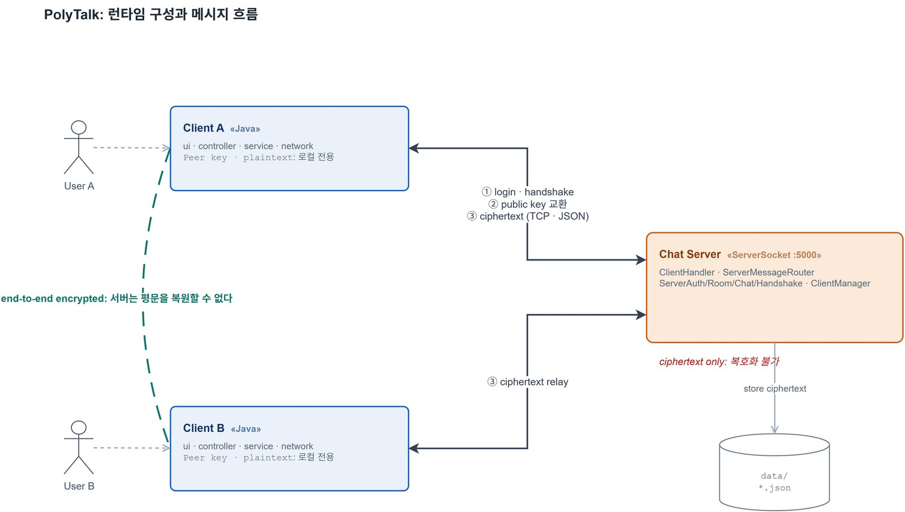
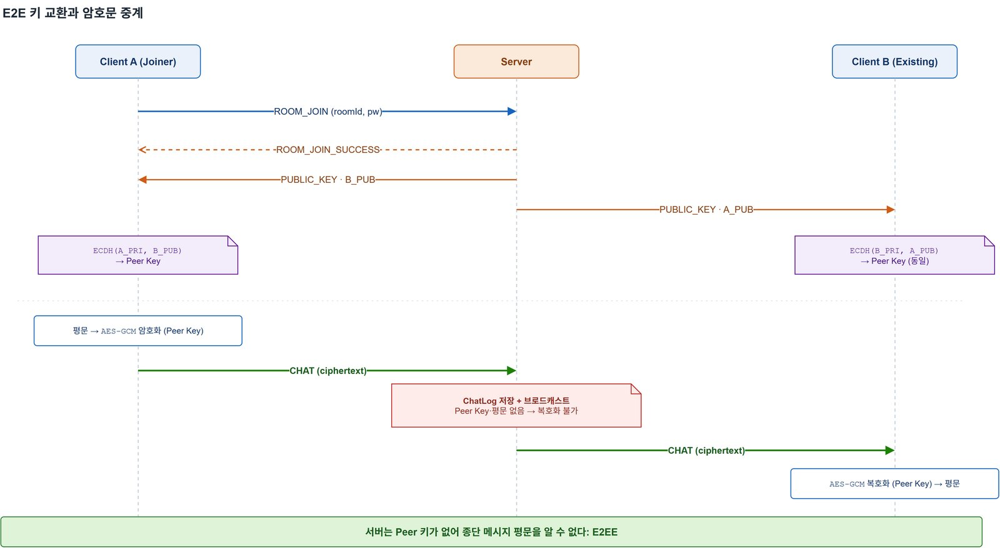
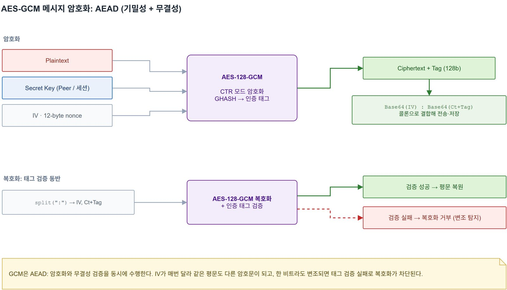
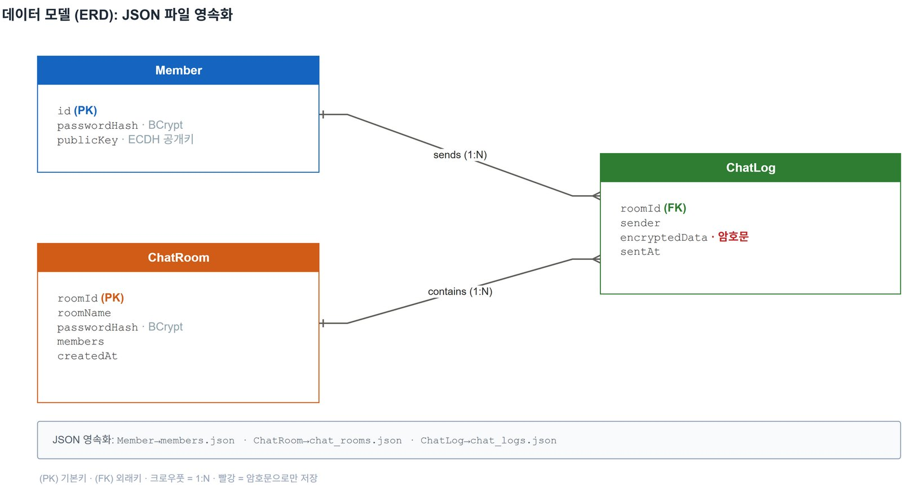
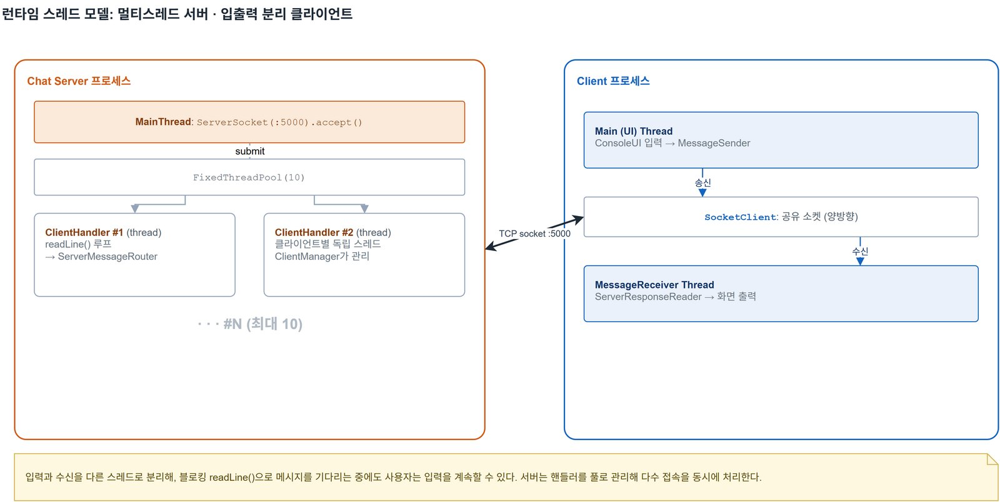
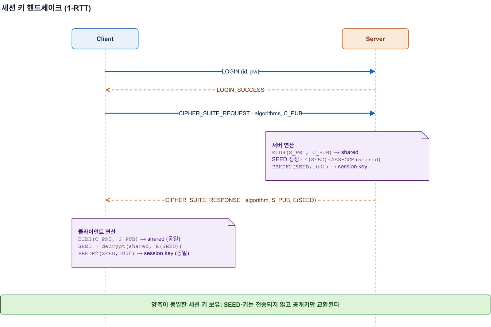

· 자바 심화 과제 · 백엔드 · 네트워크 · 암호
polytalk
Java TCP 소켓으로 만든 1:1 종단 간 암호화 채팅입니다. 서버에는 암호문만 저장됩니다.
- 기간
- 2026년 5월
- 형태
- 광명융합기술교육원 자바 심화 과제입니다.
- 기술
- Java 21 · TCP Socket · ExecutorService · ECDH · AES-128-GCM · PBKDF2 · BCrypt · Jackson · JUnit 5
- 자료
- GitHub 저장소

암호화와 복호화는 클라이언트에서만 합니다
보통의 채팅 서버는 메시지 평문을 받아 처리하고 저장합니다. 그러면 서버의 로그나 저장 파일이 새어 나갈 때 대화도 그대로 드러납니다. polytalk는 Java TCP 소켓으로 만든 콘솔 1:1 채팅입니다. 암호화와 복호화는 클라이언트에서만 하고, 서버는 회원 인증과 방 관리, 암호문을 저장하고 전달하는 일만 합니다.
메시지를 푸는 키는 두 클라이언트가 각자 계산하고, 서버로 보내지 않습니다.
| 항목 | 값 | 설명 |
|---|---|---|
| 서버에 남는 평문 메시지 | 0건 | 저장 파일의 채팅 본문은 모두 암호문입니다. |
| 기기에서 만드는 EC 키쌍 | 256비트 | 개인키는 서버로 보내지 않습니다. |
서버는 공개키만 전하고, Peer 키는 두 클라이언트가 각자 계산합니다
방에 들어가면 서버가 두 사람의 공개키를 서로에게 전해 주고, 각 클라이언트는 자기 개인키와 상대 공개키로 ECDH를 계산합니다. 두 사람이 따로 계산해도 결과는 같은 Peer 키입니다.

AES-128-GCM 암호화와 암호문 저장
메시지는 AES-128-GCM으로 암호화합니다. GCM은 인증 태그를 같이 만들어서, 중간에 내용이 바뀌면 복호화 단계에서 걸러 냅니다. IV는 메시지마다 12바이트로 새로 만들기 때문에 같은 문장을 두 번 보내도 암호문이 달라집니다. 서버는 받은 data를 풀지 않고 ChatLog.encryptedData에 그대로 넣습니다.

Base64(IV):Base64(암호문+태그) 형태로 오갑니다.// AesGcmUtil.encrypt · 메시지마다 새 IV
byte[] iv = new byte[12];
new SecureRandom().nextBytes(iv);
Cipher c = Cipher.getInstance(
"AES/GCM/NoPadding");
c.init(ENCRYPT_MODE, key,
new GCMParameterSpec(128, iv));
// ServerChatService · 풀지 않고 그대로 저장
ChatLog log = ChatLog.builder()
.roomId(msg.getRoomId())
.encryptedData(msg.getData())
.build();
chatLogRepository.save(log);
clientManager.broadcastRoom(...);줄인 코드입니다.

- 채팅 로그의 본문은 암호문뿐입니다
chat_logs.json을 열어 봐도encryptedData에는 암호문만 있습니다. - 비밀번호는 해시로만회원 비밀번호와 방 비밀번호는 BCrypt 해시로 저장합니다.
- 서버가 아는 키는 공개키뿐입니다회원 정보에는 ECDH 공개키만 남고, 개인키는 각자 기기의
client_keys/에만 있습니다.
연결을 받는 스레드와 처리하는 스레드 풀
서버의 메인 스레드는 ServerSocket.accept()만 하고, 접속이 들어올 때마다 ClientHandler를 크기 10의 스레드 풀에 넘깁니다. 클라이언트도 입력과 수신을 다른 스레드로 나눠, 상대 메시지를 기다리는 동안에도 계속 입력할 수 있습니다.

- 함께 쓰는 자료는 동시성 컬렉션으로접속자 목록은
ConcurrentHashMap.newKeySet(), 핸드셰이크 세션은ConcurrentHashMap에 둡니다. JSON 파일 저장소는synchronized로 보호합니다. - 메시지 종류별 서비스 분기
ServerMessageRouter가 메시지 종류를 보고 인증, 방, 채팅, 핸드셰이크 서비스에 넘깁니다. - 핸드셰이크를 마친 연결만 채팅
CIPHER_SUITE_REQUEST한 번으로 암호 방식을 고르고 세션 키까지 만듭니다. 세션 키는 PBKDF2로 얻고, 이 과정을 마친 연결만CHAT을 보낼 수 있습니다.

사용 기술과 암호 단위 테스트
테스트로 확인하는 것
- 서로 다른 두 키쌍에서 ECDH로 같은 AES 키가 나온다 ·
EcdhUtilTest - 암호화한 뒤 복호화하면 원래 문장이 돌아온다 ·
AesGcmUtilTest - 같은 평문을 두 번 암호화하면 암호문이 서로 다르다 ·
AesGcmUtilTest
GitHub Actions가 JDK 21에서 ./gradlew test를 돌립니다.
사용 기술
| 분류 | 기술 |
|---|---|
| 언어 · 빌드 | Java 21 · Gradle |
| 네트워크 | java.net Socket(TCP) · ExecutorService · 포트 5000 |
| 암호 | JCA의 EC/ECDH · AES/GCM/NoPadding · PBKDF2WithHmacSHA256 · jBCrypt |
| 저장 · 직렬화 | JSON 파일 · Jackson |
| 로그 · 테스트 | SLF4J · Logback · JUnit 5 · AssertJ · Mockito |